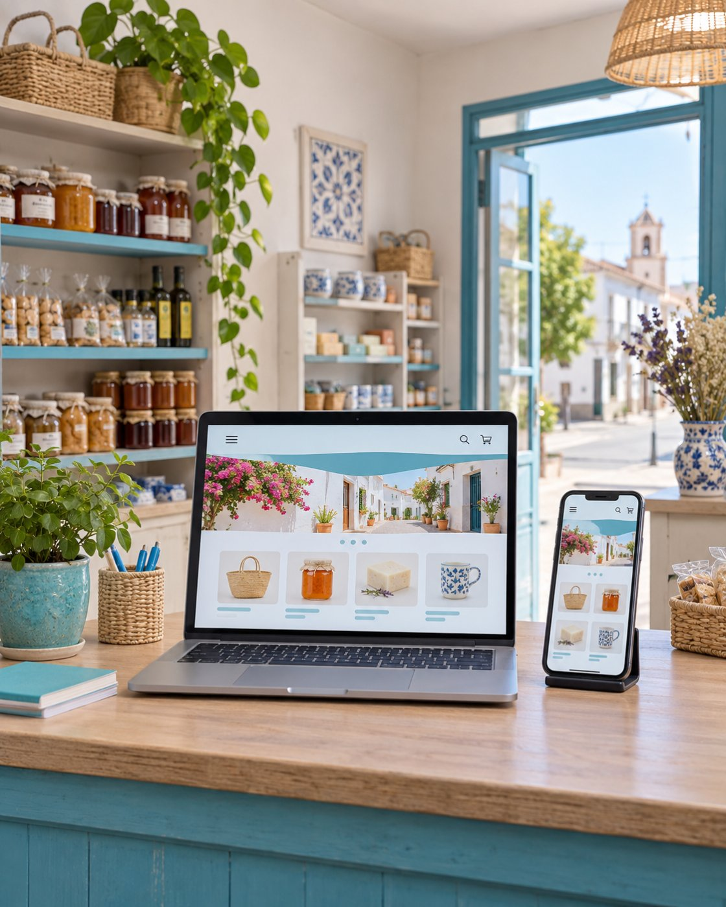
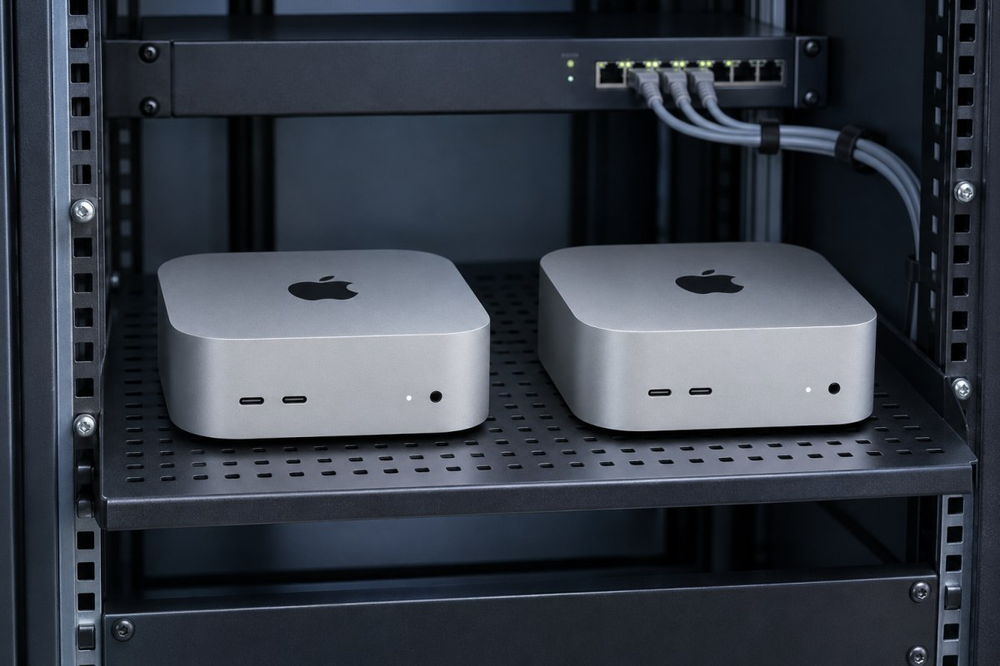
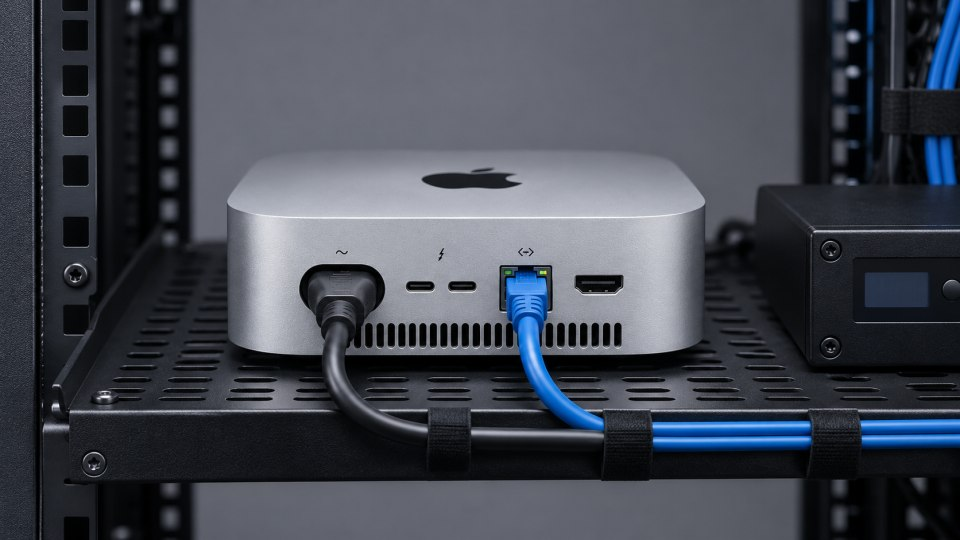
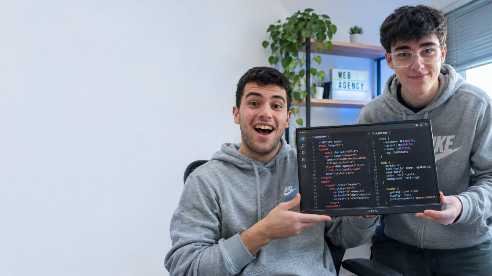
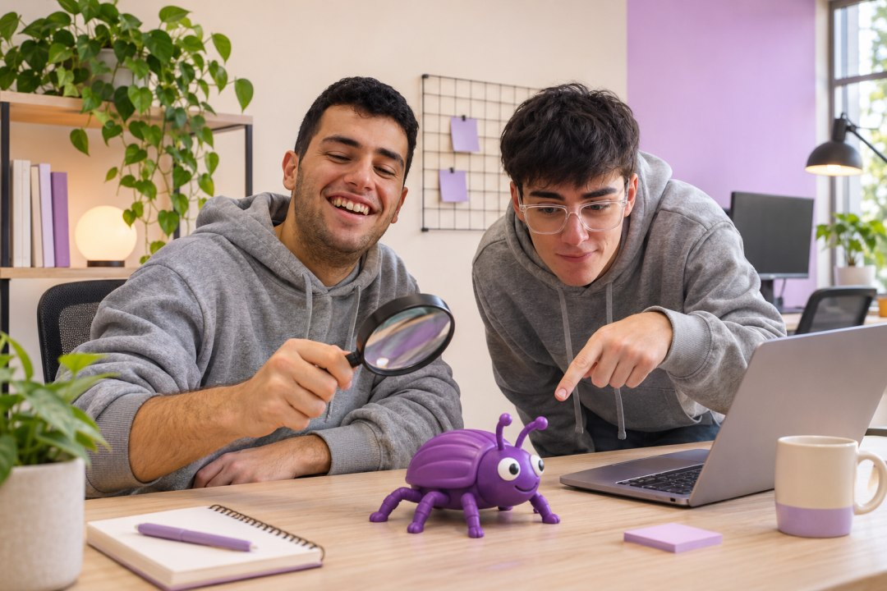
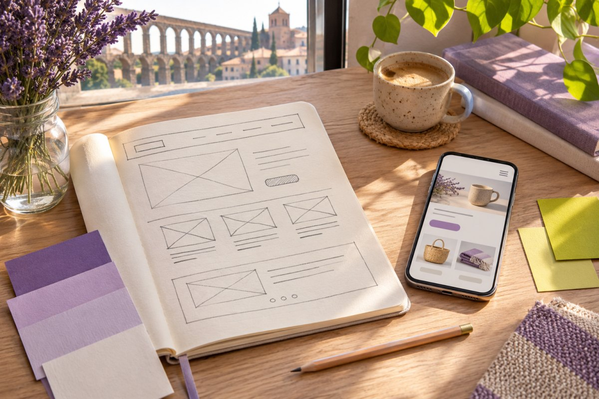

Diseño web
Damos forma a páginas claras y reconocibles, pensadas para que tus clientes encuentren en el móvil lo que necesitan.
Cómo trabajamos en diseño webESTUDIO WEB · SEGOVIA
Diseñamos, programamos y cuidamos webs para comercios y pequeñas empresas de Segovia. Todo desde nuestro estudio en Nava de la Asunción.
Plaza del Sedeño · Nava de la Asunción

01 / SERVICIOS
Desde la primera conversación hasta la próxima actualización, cada parte de tu web tiene quien se ocupe de ella.
Damos forma a páginas claras y reconocibles, pensadas para que tus clientes encuentren en el móvil lo que necesitan.
Cómo trabajamos en diseño webConstruimos catálogos, reservas y herramientas a medida. Probamos cada recorrido antes de abrir la web al público.
Cómo trabajamos en programaciónPublicamos tu web en infraestructura gestionada por el estudio, con HTTPS, copias de seguridad y seguimiento técnico.
Ver nuestros servidoresRevisamos actualizaciones, enlaces y formularios. Cuando cambian tus horarios, tus servicios o tu catálogo, la web también cambia.
Cómo trabajamos en mantenimiento02 / ALOJAMIENTO PROPIO
Nuestra propuesta es usar Mac mini con Apple silicon como servidores del estudio. Queremos alojar webs de comercios en equipos compactos que podamos configurar, medir y mantener directamente.
En estos Mac, el software nativo usa la arquitectura arm64. Antes de publicar, comprobaríamos que el servidor web, la base de datos y sus dependencias tienen versiones compatibles.
El chip M4 combina núcleos de rendimiento y de eficiencia. Queremos probar cómo se comporta con webs que alternan periodos tranquilos y picos de visitas. Mediríamos el consumo y los tiempos de respuesta en ambos casos.
El plan incluye HTTPS, avisos de caída y copias fuera del equipo. Probaríamos una restauración antes de publicar la primera web.


Imágenes generadas para ilustrar la propuesta.
Documentación de Apple Compatibilidad con arm64 Especificaciones del Mac mini M4 Consumo del Mac mini
03 / SOLUCIONES
Una tienda, un bar y un taller resuelven problemas distintos. Elige el que más se parece al tuyo.
Enseña qué tienes, explica cómo comprar y ayuda a que te encuentren. Empieza con un catálogo fácil de mantener y amplíalo cuando lo pida tu negocio.
Pon la carta, los horarios de cocina y la forma de reservar al alcance de quien te busca desde la calle. Deja las novedades a mano para cambiarlas cada semana.
Aclara qué arreglas, qué incluye cada servicio y cómo preparar una visita. Recoge los datos justos para poder atender cada solicitud.
04 / PROYECTOS
Tres proyectos ficticios para explorar decisiones de diseño y funcionalidad en negocios cercanos.
DEMO Comercio local
Un escaparate digital para una tienda de productos de cercanía.
DEMO Hostelería
Una carta pensada para consultar desde la calle o desde la mesa.
DEMO Servicios y talleres
Un recorrido sencillo para elegir una revisión y preparar una cita.

05 / EL EQUIPO
Somos un equipo de 12 personas en Nava de la Asunción. Alberto y Adrián ponen cara a un estudio en el que diseño, programación, alojamiento y mantenimiento se coordinan desde el primer día.
Antes de dibujar una pantalla, queremos saber cómo atiendes a tus clientes y qué tareas te quitan tiempo. De ahí sale el plan de trabajo.
Hablemos de tu negocioEscenas de humor creadas a partir de una foto de Alberto y Adrián.

Nos tomamos lo de buscar errores un poco al pie de la letra.
La alfombra roja también venía en tamaño mini.
06 / CUADERNO DEL ESTUDIO
Lo que hacemos y por qué lo hacemos así. Cuatro lecturas breves del boceto al mantenimiento.

DE LA MESA DE DISEÑO
Un boceto nos deja probar qué encuentra primero el cliente, antes de escribir una línea de código.
Leer sobre nuestro proceso de diseñoQué preguntamos antes de dibujar la primera pantalla.
Leer artículoCómo construimos recorridos rápidos, accesibles y fáciles de mantener.
Leer artículoDel dominio a HTTPS, con una salida preparada si algo falla.
Leer artículoPequeñas revisiones que evitan que el sitio se quede atrás.
Leer artículo07 / CONTACTO
Genera una ficha con tu idea, tus datos de contacto si quieres incluirlos y un primer paso adaptado a lo que necesita tu negocio.
Nava de la Asunción, Segovia
Buscar en el mapaCuéntanos tu idea y revisa el resumen antes de guardarlo. El resumen se genera en tu navegador y se guarda en tu dispositivo al descargarlo.